什么是内存
内存（Memory）是计算机中最重要的部件之一，它是程序与CPU进行沟通的桥梁。计算机中所有程序的运行都是在内存中进行的，因此内存对计算机的影响非常大，内存又被称为主存，其作用是存放 CPU 中的运算数据，以及与硬盘等外部存储设备交换的数据。只要计算机在运行中，CPU 就会把需要运算的数据调到主存中进行运算，当运算完成后CPU再将结果传送出来，主存的运行也决定了计算机的稳定运行。
内存的物理结构
在了解一个事物之前，你首先得先需要见过它，你才会有印象，才会有想要了解的兴趣，所以我们首先需要先看一下什么是内存以及它的物理结构是怎样的。
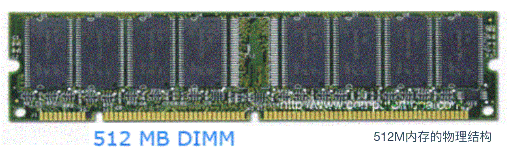
内存的内部是由各种IC电路组成的，它的种类很庞大，但是其主要分为三种存储器
- 随机存储器（RAM）： 内存中最重要的一种，表示既可以从中读取数据，也可以写入数据。当机器关闭时，内存中的信息会丢失。
- 只读存储器（ROM）：ROM 一般只能用于数据的读取，不能写入数据，但是当机器停电时，这些数据不会丢失。
- 高速缓存（Cache）：Cache 也是我们经常见到的，它分为一级缓存（L1 Cache）、二级缓存（L2 Cache）、三级缓存（L3 Cache）这些数据，它位于内存和 CPU 之间，是一个读写速度比内存更快的存储器。当 CPU 向内存写入数据时，这些数据也会被写入高速缓存中。当 CPU 需要读取数据时，会直接从高速缓存中直接读取，当然，如需要的数据在Cache中没有，CPU会再去读取内存中的数据。
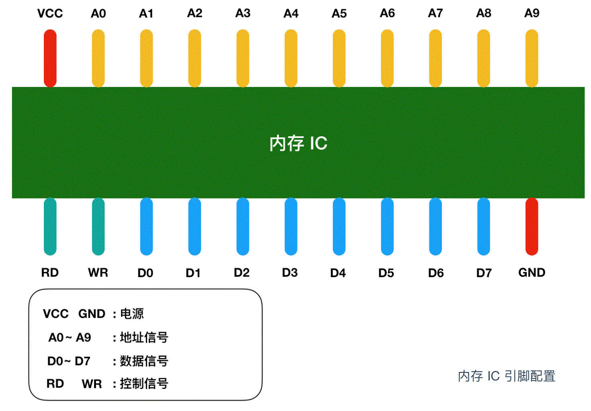
图中 VCC 和 GND 表示电源，A0 - A9 是地址信号的引脚，D0 - D7 表示的是数据信号、RD 和 WR 都是控制信号，我用不同的颜色进行了区分，将电源连接到 VCC 和 GND 后，就可以对其他引脚传递 0 和 1 的信号，大多数情况下，+5V 表示1，0V 表示 0。
我们都知道内存是用来存储数据，那么这个内存 IC 中能存储多少数据呢？D0 - D7 表示的是数据信号，也就是说，一次可以输入输出 8 bit = 1 byte 的数据。A0 - A9 是地址信号共十个，表示可以指定 00000 00000 - 11111 11111 共 2 的 10次方 = 1024个地址。每个地址都会存放 1 byte 的数据，因此我们可以得出内存 IC 的容量就是 1 KB。
如果我们使用的是 512 MB 的内存，这就相当于是 512000（512 * 1000） 个内存 IC。当然，一台计算机不太可能有这么多个内存 IC ，然而，通常情况下，一个内存 IC 会有更多的引脚，也就能存储更多数据。
内存的读写过程
让我们把关注点放在内存 IC 对数据的读写过程上来吧！我们来看一个对内存IC 进行数据写入和读取的模型
来详细描述一下这个过程，假设我们要向内存 IC 中写入 1byte 的数据的话，它的过程是这样的：
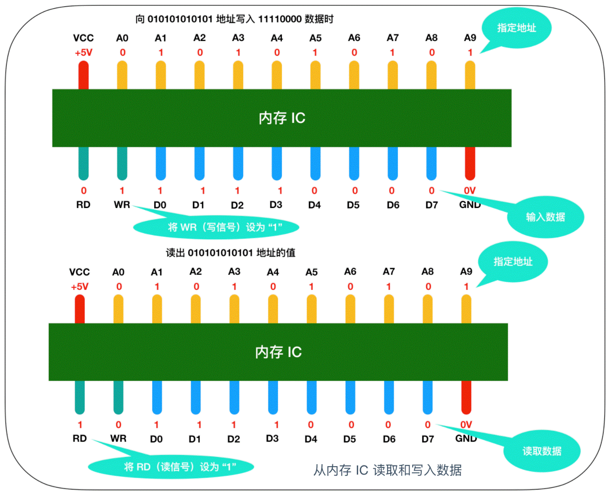
- 首先给 VCC 接通 +5V 的电源，给 GND 接通 0V 的电源，使用 A0 - A9 来指定数据的存储场所，然后再把数据的值输入给 D0 - D7 的数据信号，并把 WR（write）的值置为 1，执行完这些操作后，即可以向内存 IC 写入数据
- 读出数据时，只需要通过 A0 - A9 的地址信号指定数据的存储场所，然后再将 RD 的值置为 1 即可。
- 图中的 RD 和 WR 又被称为控制信号。其中当WR 和 RD 都为 0 时，无法进行写入和读取操作。
为了便于记忆，我们把内存模型映射成为我们现实世界的模型，在现实世界中，内存的模型很想我们生活的楼房。在这个楼房中，1层可以存储一个字节的数据，楼层号就是地址，下面是内存和楼层整合的模型图
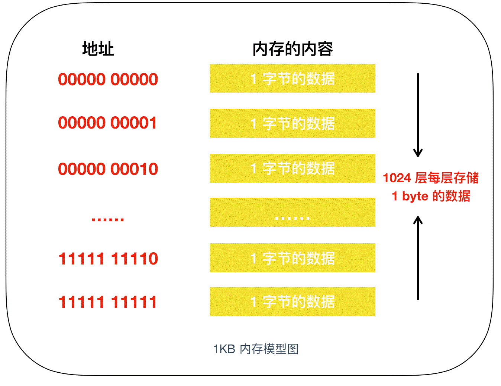
我们知道，程序中的数据不仅只有数值，还有数据类型的概念，从内存上来看，就是占用内存大小（占用楼层数）的意思。即使物理上强制以 1 个字节为单位来逐一读写数据的内存，在程序中，通过指定其数据类型，也能实现以特定字节数为单位来进行读写。
下面是一个以特定字节数为例来读写指令字节的程序的示例
// 定义变量 char a; short b; long c; // 变量赋值 a = 123; b = 123; c = 123;
我们分别声明了三个变量 a,b,c ，并给每个变量赋上了相同的 123，这三个变量表示内存的特定区域。通过变量，即使不指定物理地址，也可以直接完成读写操作，操作系统会自动为变量分配内存地址。
这三个变量分别表示 1 个字节长度的 char，2 个字节长度的 short，表示4 个字节的 long。因此，虽然数据都表示的是 123，但是其存储时所占的内存大小是不一样的。如下所示
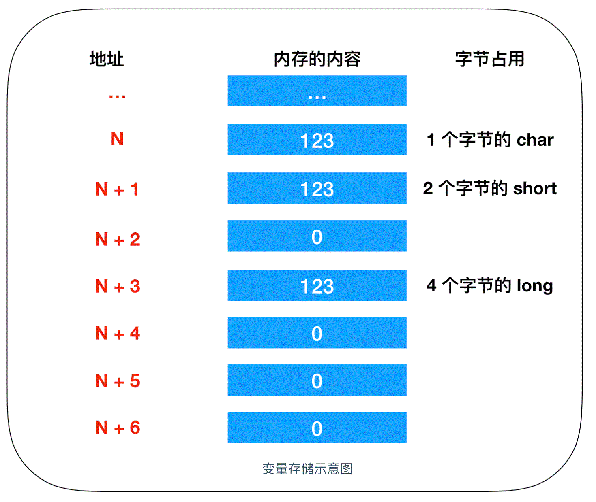
这里的 123 都没有超过每个类型的最大长度，所以 short 和 long 类型为所占用的其他内存空间分配的数值是0，这里我们采用的是低字节序列的方式存储。
低字节序列：将数据低位存储在内存低位地址。
高字节序列：将数据的高位存储在内存地位的方式称为高字节序列。
内存的使用
指针
指针是 C 语言非常重要的特征，指针也是一种变量，只不过它所表示的不是数据的值，而是内存的地址。通过使用指针，可以对任意内存地址的数据进行读写。
在了解指针读写的过程前，我们先需要了解如何定义一个指针，和普通的变量不同，在定义指针时，我们通常会在变量名前加一个 * 号。例如我们可以用指针定义如下的变量
char *d; // char类型的指针 d 定义 short *e; // short类型的指针 e 定义 long *f; // long类型的指针 f 定义
我们以32位计算机为例，32位计算机的内存地址是 4 字节，在这种情况下，指针的长度也是 32 位。然而，变量 d e f 却代表了不同的字节长度，这是为什么呢？
实际上，这些数据表示的是从内存中一次读取的字节数，比如 d e f 的值都为 100，那么使用 char 类型时就能够从内存中读写 1 byte 的数据，使用 short 类型就能够从内存读写 2 字节的数据， 使用 long 就能够读写 4 字节的数据，下面是一个完整的类型字节表
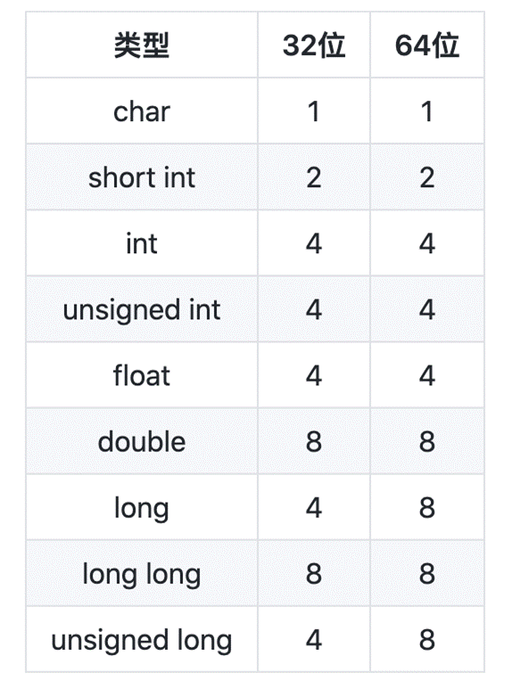
我们可以用图来描述一下这个读写过程
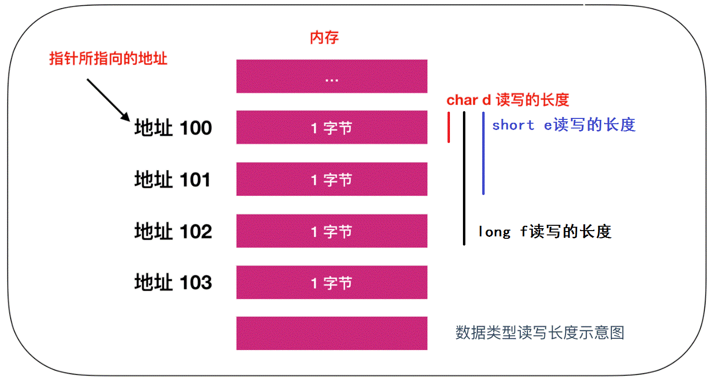
数组是内存的实现
数组是指多个相同的数据类型在内存中连续排列的一种形式。作为数组元素的各个数据会通过下标编号来区分，这个编号也叫做索引，如此一来，就可以对指定索引的元素进行读写操作。
首先先来认识一下数组，我们还是用 char、short、long 三种元素来定义数组，数组的元素用[value] 扩起来，里面的值代表的是数组的长度，就像下面的定义
char g[100]; short h[100]; long i[100];
数组定义的数据类型，也表示一次能够读写的内存大小，char 、short 、long 分别以 1 、2 、4 个字节为例进行内存的读写。
数组是内存的实现，数组和内存的物理结构完全一致，尤其是在读写1个字节的时候，当字节数超过 1 时，只能通过逐个字节来读取，下面是内存的读写过程
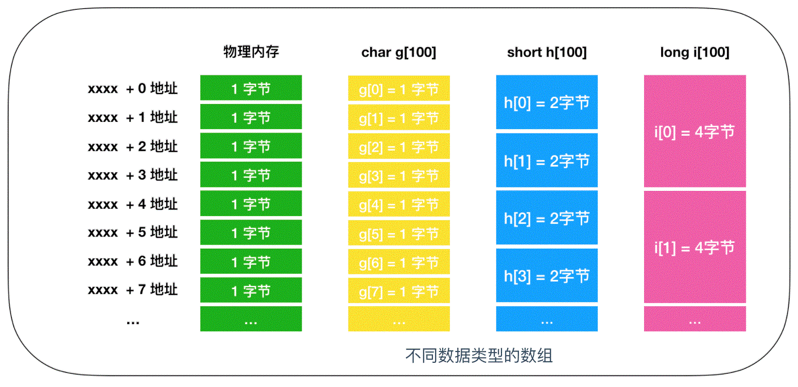
数组是我们学习的第一个数据结构，我们都知道数组的检索效率是比较快的，至于数组的检索效率为什么这么快并不是我们这篇文章讨论的重点。
栈和队列
我们上面提到数组是内存的一种实现，使用数组能够使编程更加高效，下面我们就来认识一下其他数据结构，通过这些数据结构也可以操作内存的读写。
栈
栈（stack）是一种很重要的数据结构，栈采用 LIFO（Last In First Out）即后入先出的方式对内存进行操作。它就像一个大的收纳箱，你可以往里面放相同类型的东西，比如书，最先放进收纳箱的书在最下面，最后放进收纳箱的书在最上面，如果你想拿书的话， 必须从最上面开始取，否则是无法取出最下面的书籍的。
栈的数据结构就是这样，你把书籍压入收纳箱的操作叫做压入（push），你把书籍从收纳箱取出的操作叫做弹出（pop），它的模型图大概是这样
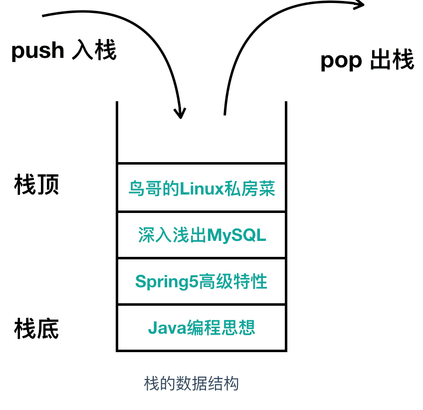
入栈相当于是增加操作，出栈相当于是删除操作，只不过叫法不一样。栈和内存不同，它不需要指定元素的地址。它的大概使用如下
// 压入数据 Push(123); Push(456); Push(789); // 弹出数据 j = Pop(); k = Pop(); l = Pop();
在栈中，LIFO 方式表示栈的数组中所保存的最后面的数据（Last In）会被最先读取出来（First On）。
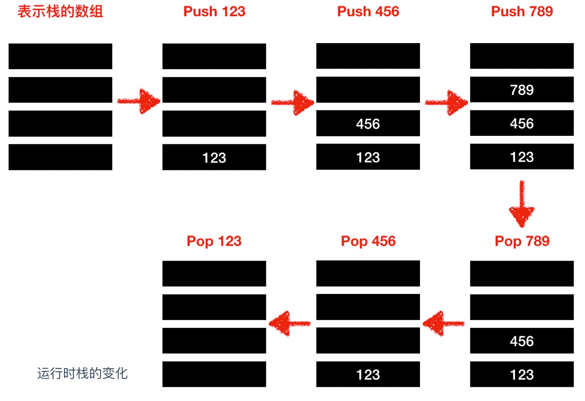
队列
队列和栈很相似但又不同，相同之处在于队列也不需要指定元素的地址，不同之处在于队列是一种 先入先出(First In First Out) 的数据结构。队列在我们生活中的使用很像是我们去景区排队买票一样，第一个排队的人最先买到票，以此类推，俗话说: 先到先得。它的使用如下
// 往队列中写入数据 EnQueue(123); EnQueue(456); EnQueue(789); // 从队列中读出数据 m = DeQueue(); n = DeQueue(); o = DeQueue();
向队列中写入数据称为 EnQueue()入列，从队列中读出数据称为DeQueue()。

与栈相对，FIFO 的方式表示队列中最先所保存的数据会优先被读取出来。
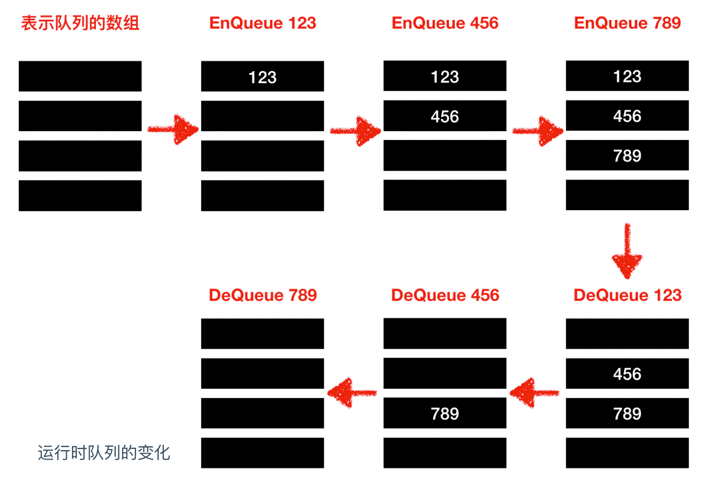
队列的实现一般有两种：顺序队列 和 循环队列，我们上面的事例使用的是顺序队列，那么下面我们看一下循环队列的实现方式
环形缓冲区
循环队列一般是以环状缓冲区(ring buffer)的方式实现的，它是一种用于表示一个固定尺寸、头尾相连的缓冲区的数据结构，适合缓存数据流。假如我们要用 6 个元素的数组来实现一个环形缓冲区，这时可以从起始位置开始有序的存储数据，然后再按照存储时的顺序把数据读出。在数组的末尾写入数据后，后一个数据就会从缓冲区的头开始写。这样，数组的末尾和开头就连接了起来。
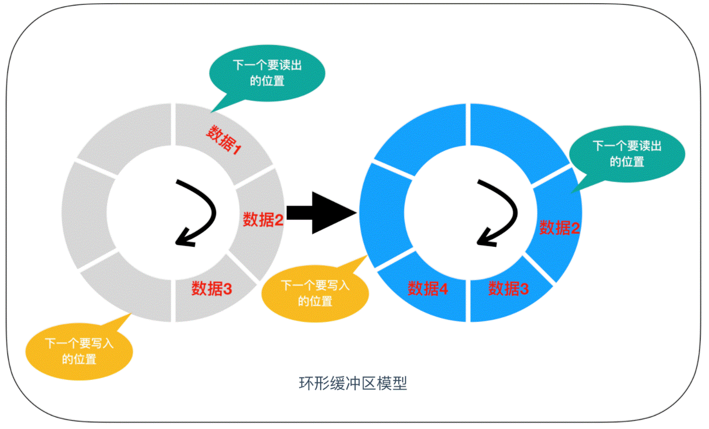
链表
下面我们来介绍一下链表和 二叉树，它们都是可以不用考虑索引的顺序就可以对元素进行读写的方式。通过使用链表，可以高效的对数据元素进行添加 和 删除操作。而通过使用二叉树，则可以更高效的对数据进行检索。
在实现数组的基础上，除了数据的值之外，通过为其附带上下一个元素的索引，即可实现链表。数据的值和下一个元素的地址（索引）就构成了一个链表元素，如下所示
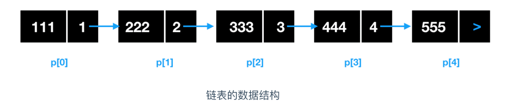
对链表的添加和删除都是非常高效的，我们来叙述一下这个添加和删除的过程，假如我们要删除地址为 p[2] 的元素，链表该如何变化呢？
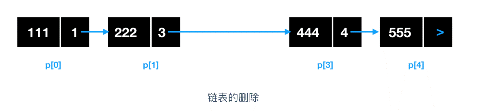
我们可以看到，删除地址为 p[2] 的元素后，直接将链表剔除，并把 p[2] 前一个位置的元素 p[1] 的指针域指向 p[2] 下一个链表元素的数据区即可。
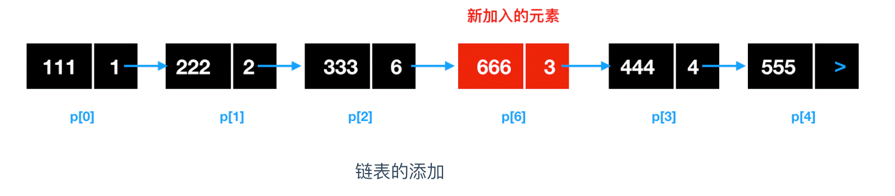
那么对于新添加进来的链表，需要确定插入位置，比如要在 p[2] 和 p[3] 之间插入地址为 p[6] 的元素，需要将 p[6] 的前一个位置 p[2] 的指针域改为 p[6] 的地址，然后将 p[6] 的指针域改为 p[3] 的地址即可。
链表的添加不涉及到数据的移动，所以链表的添加和删除很快，而数组的添加设计到数据的移动，所以比较慢，通常情况下，使用数组来检索数据，使用链表来进行添加和删除操作。
二叉树
二叉树也是一种检索效率非常高的数据结构，二叉树是指在链表的基础上往数组追加元素时，考虑到数组的大小关系，将其分成左右两个方向的表现形式。假如我们把 50 这个值保存到了数组中，那么，如果接下来要进行值写入的话，就需要和50比较，确定谁大谁小，比50数值大的放右边，小的放左边，下图是二叉树的比较示例
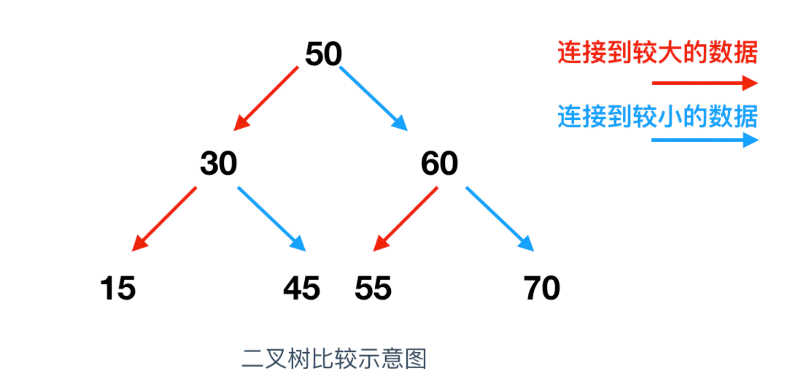
二叉树是由链表发展而来，因此二叉树在追加和删除元素方面也是同样有效的。
这一切的演变都是以内存为基础的。